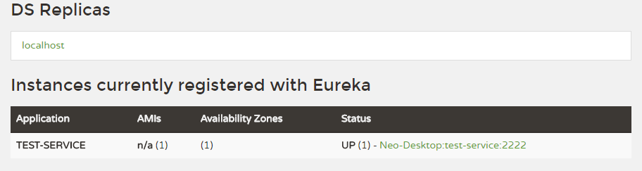

| 知乎专栏 ｜ 多维度架构 | | | 微信号 netkiller-ebook | | | QQ群：128659835 请注明“读者” |
com.netflix.discovery.shared.transport.TransportException: Cannot execute request on any known server
解决方法，禁用 CSRF
package cn.netkiller.eureka.config;
import org.springframework.context.annotation.Configuration;
import org.springframework.security.config.annotation.authentication.builders.AuthenticationManagerBuilder;
import org.springframework.security.config.annotation.web.builders.HttpSecurity;
import org.springframework.security.config.annotation.web.configuration.EnableWebSecurity;
import org.springframework.security.config.annotation.web.configuration.WebSecurityConfigurerAdapter;
@Configuration
@EnableWebSecurity
public class SecurityConfigurerAdapter extends WebSecurityConfigurerAdapter {
@Override
protected void configure(HttpSecurity http) throws Exception {
http.csrf().disable();
super.configure(http);
}
@Override
protected void configure(AuthenticationManagerBuilder auth) throws Exception {
super.configure(auth);
}
}
相同点：@EnableDiscoveryClient、@EnableEurekaClient 这二个注解作用，都可以让该服务注册到注册中心上去。 不同点：@EnableEurekaClient 只支持Eureka注册中心，@EnableDiscoveryClient 支持Eureka、Zookeeper、Consul 这三个注册中心。
方法一，修改配置是让Hystrix的超时时间改为5秒 hystrix.command.default.execution.isolation.thread.timeoutInMilliseconds: 5000 方法二，修改配置，禁用Hystrix的超时时间 hystrix.command.default.execution.timeout.enabled: false 方法三，修改配置，用于索性禁用feign的hystrix。 feign.hystrix.enabled: false
由于 Eureka Server 清理无效节点周期长默认为90秒，可能会遇到微服务注销慢甚至不注销的问题。
Eureka Server 配置，注意仅适合开发环境。
# 设为false, 关闭自我保护， 从而保证会注销微服务 eureka.server.enable-self-preservation=false # 清理间隔（单位毫秒，默认是60 * 1000） eureka.server.eviction-interval-timer-in-ms=30000
Eureka Client
配置开启健康检查，续约更新时间和到期时间。
# 设为true，开启健康检查（需要spring-boot-starter-actuator 依赖） eureka.client.healthcheck.enabled=ture # 续约更新时间间隔（默认是30秒） eureka.instance.lease-renewal-interval-in-seconds=20000 # 续约到期时间（默认90秒) eureka.instance.lease-expiration-duration-in-seconds=30000
问题分析，@PathVariable 找不到对应的参数
package api.feign;
import java.util.List;
import java.util.Map;
import org.springframework.cloud.netflix.feign.FeignClient;
import org.springframework.web.bind.annotation.PathVariable;
import org.springframework.web.bind.annotation.RequestMapping;
@FeignClient("restful-api-service")
public interface Search {
@RequestMapping("/search/article/list")
public List<Map<String, Object>> list();
@RequestMapping("/search/article/{articleId}")
public Object read(@PathVariable String articleId);
}
解决方案
@RequestMapping("/search/article/{articleId}")
public Object read(@PathVariable("articleId") String articleId);
背景：我们需要共用 Feign 接口，故将 Feign 放到共用的 common-version.jar 包中，供其他项目使用。
启动提示：Consider defining a bean of type 'common.feign.Cms' in your configuration.
注解加入包位置后解决
@EnableFeignClients("common.feign")
例 10.1. Share feign interface.
package cn.netkiller.feign;
import org.springframework.boot.SpringApplication;
import org.springframework.boot.autoconfigure.SpringBootApplication;
import org.springframework.cloud.netflix.eureka.EnableEurekaClient;
import org.springframework.cloud.netflix.feign.EnableFeignClients;
@SpringBootApplication
@EnableEurekaClient
@EnableFeignClients("common.feign")
public class Application {
public static void main(String[] args) {
System.out.println("Feign Starting...");
SpringApplication.run(Application.class, args);
}
}
com.netflix.client.ClientException: Load balancer does not have available server for client: restful
<project xmlns="http://maven.apache.org/POM/4.0.0" xmlns:xsi="http://www.w3.org/2001/XMLSchema-instance" xsi:schemaLocation="http://maven.apache.org/POM/4.0.0 http://maven.apache.org/xsd/maven-4.0.0.xsd"> <modelVersion>4.0.0</modelVersion> <groupId>cn.netkiller.spring.cloud</groupId> <artifactId>eureka.client</artifactId> <version>0.0.1-SNAPSHOT</version> <packaging>jar</packaging> <name>eureka.client</name> <url>http://maven.apache.org</url> <properties> <project.build.sourceEncoding>UTF-8</project.build.sourceEncoding> </properties> <parent> <groupId>org.springframework.boot</groupId> <artifactId>spring-boot-starter-parent</artifactId> <version>1.5.3.RELEASE</version> <relativePath /> </parent> <dependencyManagement> <dependencies> <dependency> <groupId>org.springframework.cloud</groupId> <artifactId>spring-cloud-dependencies</artifactId> <version>Dalston.SR1</version> <type>pom</type> <scope>import</scope> </dependency> </dependencies> </dependencyManagement> <dependencies> <dependency> <groupId>org.springframework.boot</groupId> <artifactId>spring-boot-starter-test</artifactId> <scope>test</scope> </dependency> <dependency> <groupId>org.springframework.cloud</groupId> <artifactId>spring-cloud-starter-config</artifactId> </dependency> <dependency> <groupId>org.springframework.cloud</groupId> <artifactId>spring-cloud-starter-eureka</artifactId> </dependency> </dependencies> <build> <plugins> <plugin> <groupId>org.apache.maven.plugins</groupId> <artifactId>maven-surefire-plugin</artifactId> <configuration> <skip>true</skip> </configuration> </plugin> </plugins> </build> </project>
package cn.netkiller.spring.cloud.eureka.client;
import org.springframework.boot.SpringApplication;
import org.springframework.boot.autoconfigure.SpringBootApplication;
import org.springframework.cloud.client.discovery.EnableDiscoveryClient;
@SpringBootApplication
@EnableDiscoveryClient
public class Application {
public static void main(String[] args) {
SpringApplication.run(Application.class, args);
}
}
package cn.netkiller.spring.cloud.eureka.client;
import java.util.List;
import org.slf4j.Logger;
import org.slf4j.LoggerFactory;
import org.springframework.beans.factory.annotation.Autowired;
import org.springframework.cloud.client.ServiceInstance;
import org.springframework.cloud.client.discovery.DiscoveryClient;
import org.springframework.web.bind.annotation.PathVariable;
import org.springframework.web.bind.annotation.RequestMapping;
import org.springframework.web.bind.annotation.RequestMethod;
import org.springframework.web.bind.annotation.RequestParam;
import org.springframework.web.bind.annotation.RestController;
@RestController
public class TestRestController {
private static final Logger logger = LoggerFactory.getLogger(TestRestController.class);
@RequestMapping("/")
public String home() {
logger.info("Hello!!!");
return "Hello World";
}
@Autowired
private DiscoveryClient discoveryClient;
@RequestMapping("/service-instances/{applicationName}")
public List<ServiceInstance> serviceInstancesByApplicationName(@PathVariable String applicationName) {
return this.discoveryClient.getInstances(applicationName);
}
@RequestMapping(value = "/add", method = RequestMethod.GET)
public Integer add(@RequestParam Integer a, @RequestParam Integer b) {
@SuppressWarnings("deprecation")
ServiceInstance instance = discoveryClient.getLocalServiceInstance();
Integer r = a + b;
logger.info("/add, host:" + instance.getHost() + ", service_id:" + instance.getServiceId() + ", result:" + r);
return r;
}
@RequestMapping("/greeting")
public String greeting() {
return "GREETING";
}
}
spring.application.name=test-service server.port=8080 eureka.client.serviceUrl.defaultZone=http://localhost:8761/eureka/
首先确认客户端已经注册到 http://localhost:8761/
|  |
$ curl http://localhost:8080/service-instances/test-service
[
{
"host": "Neo-Desktop",
"port": 8080,
"secure": false,
"uri": "http://Neo-Desktop:8080",
"serviceId": "TEST-SERVICE",
"metadata": {},
"instanceInfo": {
"instanceId": "Neo-Desktop:test-service:8080",
"app": "TEST-SERVICE",
"appGroupName": null,
"ipAddr": "172.25.10.150",
"sid": "na",
"homePageUrl": "http://Neo-Desktop:8080/",
"statusPageUrl": "http://Neo-Desktop:8080/info",
"healthCheckUrl": "http://Neo-Desktop:8080/health",
"secureHealthCheckUrl": null,
"vipAddress": "test-service",
"secureVipAddress": "test-service",
"countryId": 1,
"dataCenterInfo": {
"@class": "com.netflix.appinfo.InstanceInfo$DefaultDataCenterInfo",
"name": "MyOwn"
},
"hostName": "Neo-Desktop",
"status": "UP",
"leaseInfo": {
"renewalIntervalInSecs": 30,
"durationInSecs": 90,
"registrationTimestamp": 1497922681680,
"lastRenewalTimestamp": 1497922681680,
"evictionTimestamp": 0,
"serviceUpTimestamp": 1497922003783
},
"isCoordinatingDiscoveryServer": false,
"metadata": {},
"lastUpdatedTimestamp": 1497922681680,
"lastDirtyTimestamp": 1497922681025,
"actionType": "ADDED",
"asgName": null,
"overriddenStatus": "UNKNOWN"
}
}
]
add 接口测试
curl http://localhost:8080/add.json?a=5&b=3 8
<project xmlns="http://maven.apache.org/POM/4.0.0" xmlns:xsi="http://www.w3.org/2001/XMLSchema-instance" xsi:schemaLocation="http://maven.apache.org/POM/4.0.0 http://maven.apache.org/xsd/maven-4.0.0.xsd"> <modelVersion>4.0.0</modelVersion> <groupId>cn.netkiller</groupId> <artifactId>config</artifactId> <version>0.0.1-SNAPSHOT</version> <packaging>jar</packaging> <name>config</name> <url>http://maven.apache.org</url> <properties> <project.build.sourceEncoding>UTF-8</project.build.sourceEncoding> <project.reporting.outputEncoding>UTF-8</project.reporting.outputEncoding> <java.version>1.8</java.version> </properties> <parent> <groupId>org.springframework.boot</groupId> <artifactId>spring-boot-starter-parent</artifactId> <version>1.5.6.RELEASE</version> <relativePath /> </parent> <dependencyManagement> <dependencies> <dependency> <groupId>org.springframework.cloud</groupId> <artifactId>spring-cloud-config</artifactId> <version>1.3.1.RELEASE</version> <type>pom</type> <scope>import</scope> </dependency> </dependencies> </dependencyManagement> <dependencies> <dependency> <groupId>org.springframework.cloud</groupId> <artifactId>spring-cloud-config-server</artifactId> </dependency> <dependency> <groupId>org.springframework.boot</groupId> <artifactId>spring-boot-starter-test</artifactId> <scope>test</scope> </dependency> </dependencies> <build> <plugins> <plugin> <groupId>org.springframework.boot</groupId> <artifactId>spring-boot-maven-plugin</artifactId> </plugin> </plugins> </build> </project>
Application
package cn.netkiller.cloud;
import org.springframework.boot.SpringApplication;
import org.springframework.boot.autoconfigure.EnableAutoConfiguration;
import org.springframework.boot.autoconfigure.SpringBootApplication;
import org.springframework.cloud.client.discovery.EnableDiscoveryClient;
import org.springframework.cloud.config.server.EnableConfigServer;
import org.springframework.context.annotation.Configuration;
@Configuration
@EnableAutoConfiguration
@EnableDiscoveryClient
@EnableConfigServer
@SpringBootApplication
public class Application {
public static void main(String[] args) {
SpringApplication.run(Application.class, args);
}
}
server.port=8888 spring.cloud.config.server.git.uri=https://github.com/netkiller/config.git
克隆仓库
git clone https://github.com/netkiller/config.git
创建配置文件 server-development.properties
vim server-development.properties test.a=KKOOKK message=Hello world
提交配置文件
git commit -a git push
<project xmlns="http://maven.apache.org/POM/4.0.0" xmlns:xsi="http://www.w3.org/2001/XMLSchema-instance" xsi:schemaLocation="http://maven.apache.org/POM/4.0.0 http://maven.apache.org/xsd/maven-4.0.0.xsd"> <modelVersion>4.0.0</modelVersion> <groupId>netkiller.cn</groupId> <artifactId>cloud</artifactId> <version>0.0.1-SNAPSHOT</version> <parent> <groupId>org.springframework.boot</groupId> <artifactId>spring-boot-starter-parent</artifactId> <version>1.5.2.RELEASE</version> <relativePath /> </parent> <properties> <project.build.sourceEncoding>UTF-8</project.build.sourceEncoding> <java.version>1.8</java.version> </properties> <dependencyManagement> <dependencies> <dependency> <groupId>org.springframework.cloud</groupId> <artifactId>spring-cloud-config</artifactId> <version>1.3.1.RELEASE</version> <type>pom</type> <scope>import</scope> </dependency> </dependencies> </dependencyManagement> <dependencies> <dependency> <groupId>org.springframework.cloud</groupId> <artifactId>spring-cloud-starter-config</artifactId> </dependency> <dependency> <groupId>org.springframework.boot</groupId> <artifactId>spring-boot-starter-actuator</artifactId> </dependency> <dependency> <groupId>org.springframework.boot</groupId> <artifactId>spring-boot-starter-web</artifactId> </dependency> <dependency> <groupId>org.springframework.boot</groupId> <artifactId>spring-boot-starter-test</artifactId> <scope>test</scope> </dependency> </dependencies> <build> <plugins> <plugin> <groupId>org.springframework.boot</groupId> <artifactId>spring-boot-maven-plugin</artifactId> </plugin> </plugins> </build> </project>
package cn.netkiller.cloud.client;
import org.springframework.beans.factory.annotation.Value;
import org.springframework.boot.SpringApplication;
import org.springframework.boot.autoconfigure.SpringBootApplication;
import org.springframework.cloud.context.config.annotation.RefreshScope;
import org.springframework.web.bind.annotation.RequestMapping;
import org.springframework.web.bind.annotation.RestController;
@SpringBootApplication
public class Application {
public static void main(String[] args) {
SpringApplication.run(Application.class, args);
}
}
@RefreshScope
@RestController
class MessageRestController {
@Value("${message:Hello default}")
private String message;
@RequestMapping("/message")
String getMessage() {
return this.message;
}
}
注意 @RefreshScope 注解
spring.application.name=server-development spring.cloud.config.uri=http://localhost:8888 management.security.enabled=false